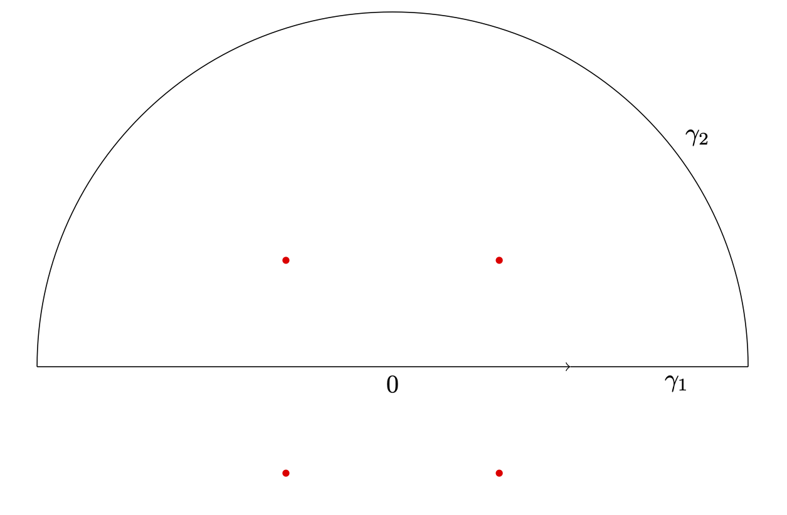
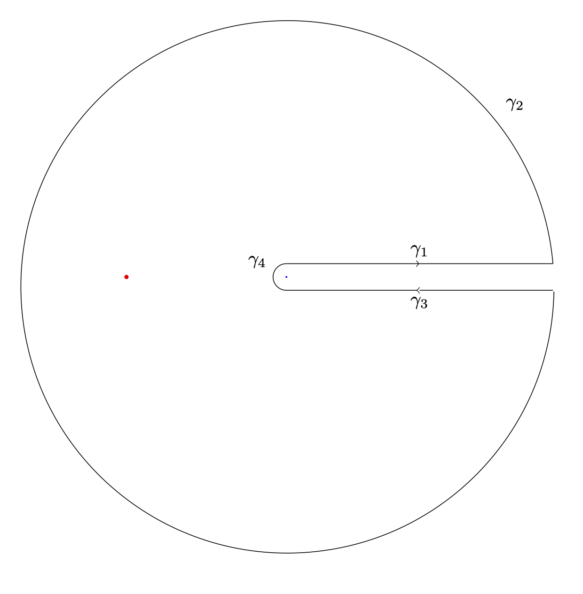
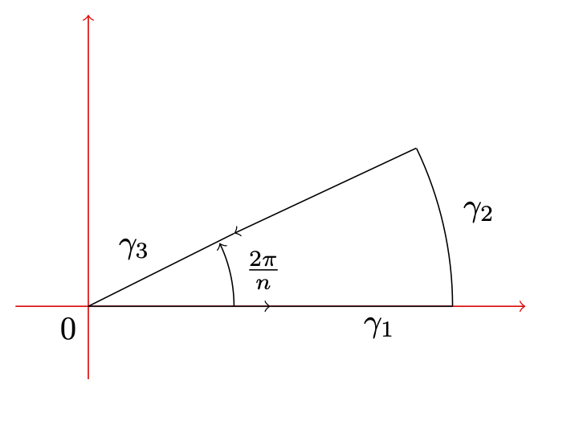
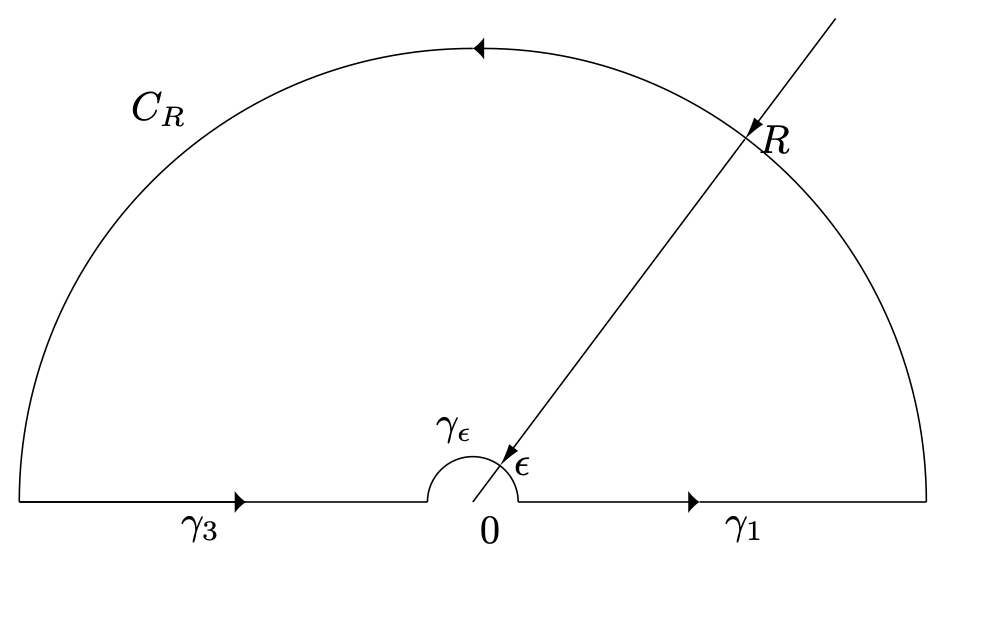

2.3. Singularités et Théorème des résidus#
\(\newcommand{\R}{\mathbb{R}}\) \(\newcommand{\Q}{\mathbb{Q}}\) \(\newcommand{\N}{\mathbb{N}}\) \(\newcommand{\C}{\mathbb{C}}\) \(\newcommand{\Z}{\mathbb{Z}}\)
2.3.1. Théorème des résidus#
Definition 2.3
Soit \(f\) une fonction complexe, et \(z_0\in \C\).
On dit que \(z_0\) est un point de singularité isolé (p.s.i.) de \(f\) si il existe \(R>0\) tel que \(f\) est holomorphe sur le disque pointé \(B(z_0,R)\backslash\{z_0\}\).
Lorsque \(z_0\) est un p.s.i., on appelle résidu de \(f\) en \(z_0\) la quantité
Theorem 2.2 (Développement de Laurent et résidus)
Soit \(f\) holomorphe sur \(\Omega\backslash \cup_j\{z_j\}\), où \(\Omega\) est un ouvert non vide de \(\C\) et \(\{z_j\}\) est un ensemble de points isolés (en particulier, \(z_j\) sont des p.s.i. de \(f\)).
Enfin, soit \(D \subset \Omega\) un domaine simplement connexe de contour \(\partial D\) inclus dans \(\Omega\). Alors
Remark 2.2
Si \(z_0\) est un p.s.i. de \(f\), alors il existe \((a_n, b_n)\) tels que
Et l’on peut alors vérifier que \(Res(f,z_0)=b_1\).
Definition 2.4
On dit qu’un p.s.i. \(z_0\) de \(f\) est un pôle d’ordre \(p\) si la fonction \(\varphi : z\mapsto (z-z_0)^pf(z)\) s’étend en une fonction holomorphe sur un voisinage de \(z_0\), et que de plus \(\varphi(z_0)\neq0\).
Lien avec les résidus :
Considérons donc \(z_0\) un pôle d’ordre \(p\) de \(f\). Sur un voisinage de \(z_0\), on écrit un développement de Taylor de \(\varphi\) :
Ce qui nous donne le développement asymptotique de f au voisinage de \(z_0\) suivant :
Par unicité du développement de Laurent, nous trouvons donc que
Méthode de calcul de résidus :
Pour \(p>2\), il est souvent plus rapide de calculer un développement limité (voir toute la série de Laurent) que d’utiliser le point développé ci-dessus.
Pour \(p=2\), nous aurons \(Res(f,z_0)=\frac{d}{dz}[(z-z_0)^2f(z)]_{|z=z_0}\)
Pour \(p=1\), nous pourrons utiliser \(Res(f,z_0)=\lim\limits_{z\to z_0}(z-z_0)f(z)\). En fait, si l’on écrit \(f(z)=\frac{g(z)}{h(z)}\) avec \(g(z_0)\neq 0\), \(h(z_0)=0\) et \(h'(z_0)\neq0\), alors un simple développement limité de h montre qu’en fait,
Exercise 2.3
Déterminer les points de singularité isolé et les résidus de la fonction \(f :z\mapsto \frac{1}{\sin(z)}\).
Solution
Tout d’abord, d’après les propriétés usuelles, \(f\) est holomorphe là où \(\sin(z)\neq 0\). Or, pour \(z\in \C\)
Donc l’ensemble des points de singularité isolé de \(f\) sont compris dans \(\pi \Z\). Comme cet ensemble est clairement constitué de singularités et qu’il est discret (sans point d’accumulation), il s’agit bien de l’ensemble des points de singularité isolé.
Maintenant, pour \(k\in \Z\), on a que \(\sin(k\pi )=0\) et \(\cos(k\pi)=(-1)^k\). Donc avec la caractérisation précédente pour \(g=1\) et \(h=\sin\), nous obtenons que
2.3.2. Exemples d’applications du théorème des résidus#
Example 2.3 (Calcul d’une intégrale de la forme \(I=\int_{-\infty}^{+\infty} g(x)dx\))
Lorsqu’on peut trouver \(f\) une fonction holomorphe égale à \(g\) sur \(\R\), le premier réflexe est de regarder si l’on peut prendre le contour constitué d’une partie rectiligne (souvent de la forme \([-R,R]\)), qui donne \(I\) à la limite, et de parties circulaires qui ferment le contour (où l’on espère pouvoir appliquer un des lemmes de Jordan).
Calculer ainsi
Solution
On cherche par exemple à calculer
Commençons par remarquer que \(f:z\mapsto \frac{z^2+1}{z^4+1}\) convient. Les points de singularités isolés de \(f\) sont
On choisit de prendre le contour \(\gamma=\gamma_1\cup \gamma_2\) suivant :
{kind=link}
Les singularités dans le domaine sont alors \(\left\{e^{i\frac{\pi}{4}},ie^{i\frac{\pi}{4}}\right\} .\) Calculons les résidus associés. Vu qu’il s’agit de pôles simples d’une fraction rationnelle, en posant \(P:z\mapsto z^2+1\) et \(Q:z\mapsto z^4+1\), nous aurons
et
Le théorème des résidus nous donne alors que
Comme \(f\) est intégrable sur \(\R\), la convergence dominée nous montre que \(\int_{\gamma_1}f(z)dz\) converge vers \(I\).
Pour calculer la limite de \(\int_{\gamma_2} f(z) dz\), nous allons chercher à utiliser le premier lemme de Jordan. Remarquons que grâce aux inégalités triangulaires, pour \(|z|=R\), nous aurons
Ainsi, \(\sup\limits_{\gamma_2}|zf(z)|\leq \frac{R(R^2+1)}{R^4-1}\to 0\).
Donc d’après le premier lemme de Jordan, \(\int_{\gamma_2} f(z) dz\to 0\).
Finalement,
Example 2.4 (Calcul d’une intégrale de la forme \(I=\int_{A} g(x)dx\), où g comprend une fonction multiforme.)
On cherche alors une détermination qui permet d’atteindre tout A, ainsi qu’un domaine adapté.
Calculer ainsi pour \(a\in]0,1[\) l’intégrale
Solution
On cherche par exemple à calculer pour \(a\in]0,1[\) l’intégrale
On choisit de travailler avec la détermination de rang \(0\) et de droite de coupure \(\R_+\) (le seul point de singularité de \(f\) est alors \(-1\)). De plus, on choisit de travailler avec le domaine \(\gamma=\gamma_1\cup\gamma_2\cup\gamma_3\cup\gamma_4\) suivant :
{kind=link}
où l’on note \(R\) le rayon du cercle extérieur et \(\epsilon\) le rayon du cercle intérieur. Le résidu de \(f\) en \(-1\) vaut
Le théorème des résidus nous affirme que
Grace au théorème de convergence dominé (avec comme fontion dominante \(z\mapsto \frac{|z|^{a-1}}{0.5+|z|}\)), nous avons que
où le terme \(e^{2i\pi(a-1)}\) vient du choix de la détermination complexe.
Traitons maintenant le cas de \(\gamma_2\) et de \(\gamma_4\).
Remarquons d’abord que \(|z^{a-1}|= |z|^{a-1}\), puis grâce aux inégalités triangulaires que
La limite nulle de ces deux majorations avec le premier lemme de Jordan que
Nous avons donc obtenu que
Finalement,
Example 2.5 (Calcul d’une intégrale trigonométrique, de la forme \(I=\int_{0}^{2\pi} F(\cos(\theta),\sin(\theta))d\theta\), où F est une fraction rationnelle.)
On se ramène alors au calcul d’une intégrale sur le cercle unité, à l’aide des formules d’Euler exprimant cosinus et sinus comme des combinaisons d’exponentielles complexes.
Calculer ainsi
Solution
On pose \(z=e^{i\theta}\), et l’on a alors que
Donc (en faisant attention à ne pas oublier la dérivée de la paramétrisation),
Les points de singularité isolée de \(f:z\mapsto \frac{1}{5z-\frac{3}{2}i(z^2-1)}\) sont les zéros du polynôme de degré 2 au dénominateur. On les détermine :
Le seul point isolé situé dans le disque unité est alors \(z_+=\frac{i}{3}\).
Finalement, d’après le théorème des résidus,
ce qui permet de conclure que
Exercise 2.4
A l’aide du contour suivant et du théorème des résidus, calculer pour \(n\geq 2\) l’intégrale \(\int_{0}^{+\infty}\frac{1}{1+x^n}dx\).
{kind=link}
Solution
On pose \(f : z\mapsto \frac{1}{1+z^n}\).
Si \(|z|=R\), alors \(|zf(z)|\leq \frac{R}{R^n-1}\). Comme cette majoration est uniforme, le premier lemme de Jordan nous donne que
Nous avons directement que
Enfin,
Maintenant, la seule singularité de \(f\) dans le domaine considéré est \(e^{i\frac{\pi}{n}}\). Comme il s’agit d’un pôle simple,
Le théorème des résidus permet alors de conclure que
En passant alors à la limite quand \(R\) tend vers l’infini, on trouve
soit encore
Exercise 2.5
A l’aide du contour suivant et du théorème des résidus, calculer pour \(n\geq 2\) l’intégrale \(\int_{0}^{+\infty}\frac{1}{1+x^n}dx\).
{kind=link}
Solution
On pose \(f : z\mapsto \frac{1}{1+z^n}\).
Si \(|z|=R\), alors \(|zf(z)|\leq \frac{R}{R^n-1}\). Comme cette majoration est uniforme, le premier lemme de Jordan nous donne que
Nous avons directement que
Enfin,
Maintenant, la seule singularité de \(f\) dans le domaine considéré est \(e^{i\frac{\pi}{n}}\). Comme il s’agit d’un pôle simple,
Le théorème des résidus permet alors de conclure que
En passant alors à la limite quand \(R\) tend vers l’infini, on trouve
soit encore
Exercise 2.6
Déterminer avec le théorème des résidus la valeur de l’intégrale
Solution
On reconnait l’intégrale sur un contour fermé autour d’un point de singularité. Nous allons donc utiliser le théorème des résidus. A priori, la singularité est un pôle d’ordre 4, nous allons donc effectuer le développement de Laurent. On sait que
On en déduit donc que
En particulier,
Finalement,
Exercise 2.7
Pour \(f : x\mapsto \frac{1}{\cosh(\pi x)}\), calculer la transformée de Fourier \(\hat{f} : \xi \mapsto \int_\R f(t)e^{-2i\pi t\xi}dt\) en utilisant le contour délimité par le rectangle de sommets \(±R\), \(±R+2i\).
Solution
Dans tout l’exercice, on se fixe \(\xi\)
On pose \(g : z\mapsto \frac{e^{-2i\pi z\xi}}{\cosh(\pi z)}\).
On commence par chercher les points de singularités isolés. Ils ont nécessairement situé en les points d’annulation du dénominateur. Or, pour \(z\in \C\),
Maintenant, comme le numérateur ne s’annule pas en ces points, il s’agit bien de singularité. Au vu du contour choisi, le théorème des résidus affirme que
Pour calculer ces résidus, nous remarquons qu’il s’agit de résidu sur des pôles simples, donc
Maintenant,
Et par périodicité de l’exponentielle complexe (et donc du cosinus hyperbolique),
Finalement, en passant à la limite, on obtient du théorème des résidus que
Donc
Exercise 2.8 ((Examen 2024)} Calcul de l’intégrale du sinus cardinal)
On souhaite calculer l’intégrale définie par \( I=\int_0^{+\infty} \frac{\sin(x)}{x} dx.\)
Soit \(f(\cdot)\) qui possède un pôle en 0 et qui admet le développement de Laurent :
Pour tout \(z \in d(0,r)\backslash \{0\}\) où \(d(0,r)\) désigne le disque de centre 0 et de rayon \(r> 0\).
a)Lorsque z = 0 est un pôle simple (i.e., d’ordre 1), rappeler les valeurs des \(b_n\) (\(n \geq 1\)) en fonction du résidu res\(f(0)\) de la fonction f en 0.
Solution a)
Avoir un pôle simple revient à ce que pour \(n\geq 2\), on ait \(b_n=0\). De plus, \(b_1= \text{res}f(0)\)
b) En déduire que
où \(\gamma_\epsilon\) est le demi-cercle situé dans le demi-plan supérieur de centre 0 et de rayon \(\epsilon\).
Solution b)
Revenons à la définition d’une intégrale curviligne parcouru dans le sens trigonométrique, puis écrivons le développement de Laurent de notre fonction ayant un pôle simple :
Enfin, comme la série de Laurent admet un rayon de convergence supérieur à r, on a que la série \(\sum_{n=0}^{+\infty} a_n(\epsilon e^{i\theta}))^n i e^{i\theta} \) est uniformément bornée en \(\theta\) pour \(\epsilon\) au voisinage de 0 (par exemple par \(\sum_{n=0}^{+\infty} |a_n| (\frac{r}{2})^n\)). Donc à la limite :
c) Soit g(·) la fonction définie par \(g(z) = \frac{e^{iz}}{z}\) . Montrer que
où \(C_R\) est le demi-cercle situé dans le demi-plan supérieur de centre 0 et de rayon R.
Solution c)
On va chercher à appliquer le deuxième lemme de Jordan. On cherche à intégrer \(z\mapsto f(z)e^{i\times {\color{red}1}\times z}\) où f est l’inversion complexe, sur le demi-cercle situé dans le demi-plan supérieur de centre 0 et de rayon R.
D’abord, l’on a bien 1>0. Ensuite,
Donc nous avons toutes les hypothèses du lemme de Jordan, en pouvons en conclure la limite demandée.
d) Appliquer le Théorème de Cauchy à la fonction g(·) le long du contour représenté ci dessous. A l’aide des résultats des Questions précédentes, en déduire la valeur de l’intégrale I.
{kind=link}
Solution d)
La fonction g est holomorphe dans le contour considéré, donc d’après le théorème de Cauchy,
Nous avons vu dans la question c que \(\lim\limits_{R\to +\infty}\int_{C_R} g(z)dz =0\), et dans la question b que (attention à l’orientation du chemin curviligne)
Et un rapide calcul donne que ce résidu vaut 1.
Enfin,
En passant à la limite en R et en \(\epsilon\), on en déduit donc que